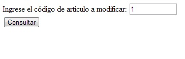
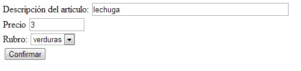

Para modificar los datos de un artículo implementaremos un algoritmo que solicite el ingreso del codigo de artículo que queremos modificar, en caso que exista permitiremos cambiar su descripción, precio y rubro.
Para poder cambiar el rubro debemos mostrar el rubro actual en un control select.
La descripción y precio actual se muestran precargados en el formulario de modificación.
Crearemos tres página. La primera donde el operador ingresa el codigo de articulo que quiere modificar, la segunda página mostraremos un formulario HTML con los datos precargados y finalmente la tercer página tendrá como objetivo ejecutar el comando SQL update.
El primer formulario solicita la carga del código del artículo que queremos modificar sus datos:
<!doctype html>
<html>
<head>
<title>Modificación de artículo</title>
</head>
<body>
<form method="post" action="pagina2.php">
Ingrese el código de artículo a modificar:
<input type="text" name="codigo" size="10" required>
<br>
<input type="submit" value="Consultar">
</form>
</body>
</html>
Lo más importante aparece en el segundo formulario donde debemos mostrar precargados los datos actuales:
<!doctype html>
<html>
<head>
<title>Modificación de artículo.</title>
</head>
<body>
<?php
$mysql=new mysqli("localhost","root","","base1");
if ($mysql->connect_error)
die("Problemas con la conexión a la base de datos");
$registro=$mysql->query("select descripcion,
precio,
codigorubro
from articulos where codigo=$_REQUEST[codigo]") or
die($mysql->error);
if ($reg=$registro->fetch_array())
{
?>
<form method="post" action="pagina3.php">
Descripción del artículo:
<input type="text" name="descripcion" size="50" value="<?php echo $reg['descripcion']; ?>">
<br>
Precio
<input type="text" name="precio" size="10" value="<?php echo $reg['precio']; ?>">
<br>
Rubro:
<select name="codigorubro">
<?php
$registros2=$mysql->query("select codigo,descripcion from rubros") or
die($mysql->error);
while ($reg2=$registros2->fetch_array())
{
if ($reg2['codigo']==$reg['codigorubro'])
echo "<option value=\"".$reg2['codigo']."\" selected>".$reg2['descripcion']."</option>";
else
echo "<option value=\"".$reg2['codigo']."\">".$reg2['descripcion']."</option>";
}
?>
</select>
<input type="hidden" name="codigo" value="<?php echo $_REQUEST['codigo']; ?>">
<br>
<input type="submit" value="Confirmar">
</form>
<?php
}
else
echo 'No existe un artículo con dicho código';
$mysql->close();
?>
</body>
</html>
En esta segunda página lo primero que hacemos es buscar si existe un artículo con dicho código:
$registro=$mysql->query("select descripcion,
precio,
codigorubro
from articulos where codigo=$_REQUEST[codigo]") or
die($mysql->error);
if ($reg=$registro->fetch_array())
{
En caso afirmativo, es decir ingresa por el verdadero del if procedemos a mostrar en las propiedades value la descripción y precio del artículo consultado.
Pero para mostrar todos los rubros debemos hacer una nueva consulta a la otra tabla (rubros) donde con los datos rescatados generamos todas las opciones del control HTML select en forma similar al algoritmo de altas:
<select name="codigorubro">
<?php
$registros2=$mysql->query("select codigo,descripcion from rubros") or
die($mysql->error);
while ($reg2=$registros2->fetch_array())
{
if ($reg2['codigo']==$reg['codigorubro'])
echo "<option value=\"".$reg2['codigo']."\" selected>".$reg2['descripcion']."</option>";
else
echo "<option value=\"".$reg2['codigo']."\">".$reg2['descripcion']."</option>";
}
?>
</select>
La única diferencia es que como debemos mostrar seleccionado el rubro actual del artículo mediante un if controlamos cada código de rubro de la tabla "rubros" con el código de rubro del artículo seleccionado. Aquel que coincida procedemos a agregarle la propiedad selected a la marca option respectiva.
Finalmente debemos implementar la página que modifica el registro respectivo mediante el comando SQL update:
<!doctype html>
<html>
<head>
<title>Modificación de artículo.</title>
</head>
<body>
<?php
$mysql=new mysqli("localhost","root","","base1");
if ($mysql->connect_error)
die("Problemas con la conexión a la base de datos");
$mysql->query("update articulos set
descripcion='$_REQUEST[descripcion]',
precio=$_REQUEST[precio],
codigorubro=$_REQUEST[codigorubro]
where codigo=$_REQUEST[codigo]") or
die($mysql->error);
echo 'Se modificaron los datos del artículo';
$mysql->close();
?>
</body>
</html>
Copiar el contenido de este cuadro de texto al NotePad++ y grabarlo en la carpeta c:\wamp\www con un nombre con extensión php (si hay varios cuadros
de texto grabar cada uno en un archivo distinto).
luego abrir el navegador (Chrome, FireFox, IExplorer etc.) y en la barra de direcciones tipear: http://localhost/pagina1.php (o el nombre del
archivo que le dió)